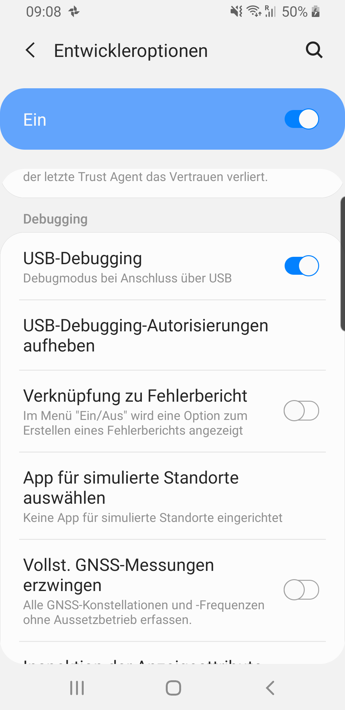

Apps ausführen
Apps können am Emulator oder auf einem Android Smartphone ausgeführt werden. Eine detailierte Dokumentation für die beiden Optionen findet man in der Android Dokumentation:
Emulator
Häufige Probleme
Android Smartphone
Die Ausführung der App ist am Android Smartphone oft schneller und einfacher als am Emulator. Damit ein Smartphone zur Ausführung von Apps in Entwicklung verwendet werden kann, müssen die Entwickleroptionen freigeschalten werden:
Entwickleroptionen freischalten
Dazu muss am Android Smartphone in Einstellungen > Telefoninfo nach der Buildnummer gesucht werden. Diese findet sich zB unter Einstellungen > Telefoninfo > Softwareinformationen. Es muss dann ca. 7-mal auf die Buildnummer geklickt werden, dann werden die Entwickleroptionen freigeschalten.

USB-Debugging aktivieren
Nachdem die Entwickleroptionen freigeschalten wurden, finden sich diese unter Einstellungen > Entwickleroptionen. Dort muss USB-Debugging aktiviert werden und das Smartphone muss über USB-Kabel am Rechner angeschlossen sein.
